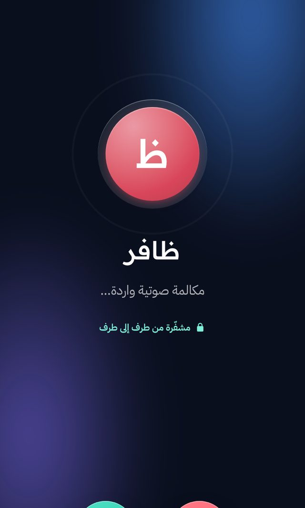
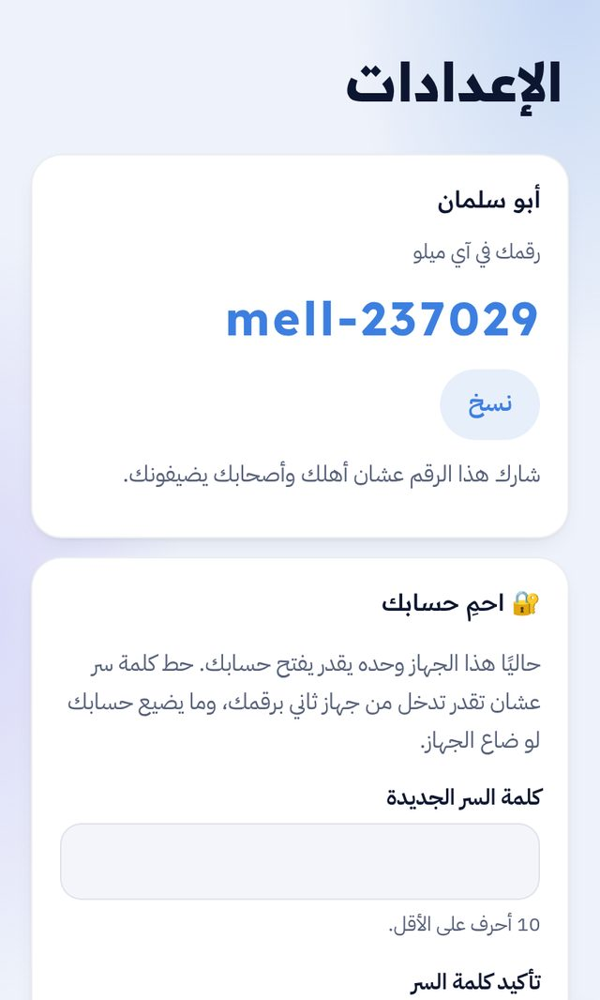
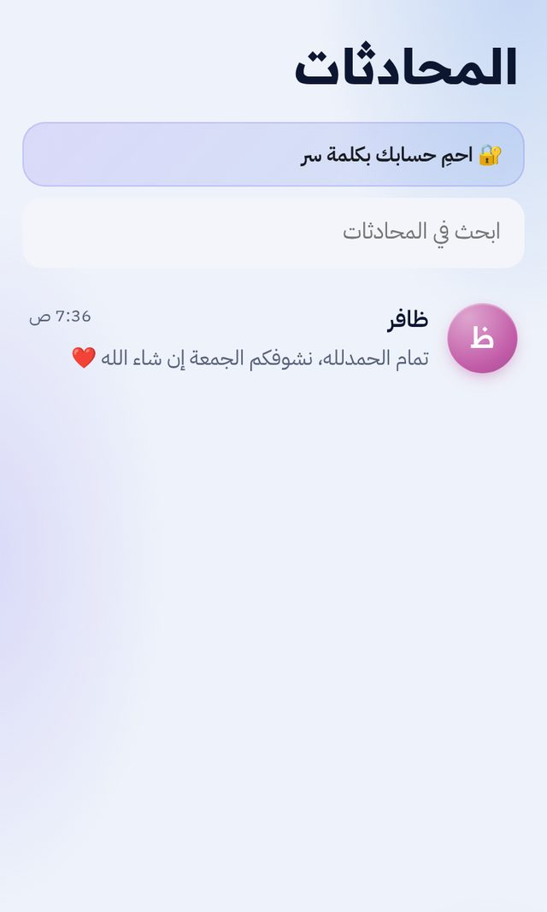

رسائل مشفّرةEncrypted chats
نص وصور وملفات وتسجيلات صوتية، تُشفَّر على جهازك قبل ما تطلع. السيرفر يحفظ نصًا مشفّرًا فقط.Text, photos, files and voice notes are encrypted on your device before they leave. The server only ever stores ciphertext.
اسمك
رقمك في ونسYour Wanas number
w1122
مثال فقط. رقمك الحقيقي يطلع لك أول ما تبدأ.An example only. Your real number appears when you start.
تطبيق للعائلة والأصحاب المقرّبين. تبدأ بضغطة، تشارك رقمك، وكل شي بينكم يبقى بينكم.An app for family and close friends. Start with one tap, share your number, and what's between you stays between you.
مشفّرةEncrypted
الرسائل والصور والملفات والتسجيلات تُشفَّر على جهازك قبل ما تطلع.Messages, photos, files and voice notes are encrypted on your device before they leave.
بدون جوالNo phone number
رمز قصير مثل w1122 يغنيك عن رقم الجوال والإيميل.A short code like w1122 replaces your phone number and email.
بدون إعلاناتNo ads
ولا تتبّع، ولا خلاصة عشوائية.No tracking and no random feed.
وضع الأطفالKids Mode
ولي الأمر يوافق على من يتواصل معهم الطفل.A guardian approves who a child can talk to.
نص وصور وملفات وتسجيلات صوتية، تُشفَّر على جهازك قبل ما تطلع. السيرفر يحفظ نصًا مشفّرًا فقط.Text, photos, files and voice notes are encrypted on your device before they leave. The server only ever stores ciphertext.
اتصل بأهلك صوت أو فيديو من نفس المحادثة. الصوت والصورة يمرّون بين الجهازين مباشرة.Call family by voice or video from the same chat. Audio and picture go straight between the two devices.

تاخذ رمزًا قصيرًا مثل w1122 تشاركه مع أهلك وأصحابك. ما نطلب رقم جوال ولا إيميل.You get a short code like w1122 to share with family and friends. We never ask for a phone number or an email.

ما فيه إعلانات، ولا خلاصة عشوائية، ولا تتبّع. النسخة الاحتياطية لمفاتيحك ملف على جوالك أنت، ولا تنرفع لأي مكان.No ads, no feed, no tracking. Your key backup is a file on your own phone and is never uploaded anywhere.

ولي الأمر يضيف حساب الطفل ويوافق على من يتواصل معهم. الطفل ما يستقبل طلبات من الغرباء. هذا مفروض من السيرفر، مو من الواجهة بس.A guardian creates the child's account and approves who they can talk to. Strangers can't reach a child. The server enforces it, not just the interface.
مع من توافق عليه فقطOnly people you approve
ثلاث خطوات، بدون إيميل ولا رقم جوال.Three steps, no email and no phone number.
تضغط «ابدأ الآن»Tap “Start now”بدون تسجيلno sign-up
تاخذ رمزك w1122You get your w1122 codeفورًاinstantly
تشارك رقمك أو تكتب رقمهمShare your number or type theirsضغطةone tap
هم يقبلون الطلبThey accept the requestمنهمon their side
تراسلهم نص وصور وصوت ومكالماتMessage, send photos and voice, callمشفّرةencrypted
تحمي حسابك بكلمة سرProtect your account with a passwordاختياريoptional
تحفظ نسخة مفاتيحك على جوالكSave a key backup on your phoneاختياريoptional
النتيجة: محادثة مشفّرة مع من تحبResult: an encrypted chat with the people you love
نعم: الرسائل والصور والملفات والتسجيلات تُشفَّر من طرف إلى طرف، والسيرفر ما يشوف إلا نصًا مشفّرًا. لكن ونس لسا نسخة تجريبية، وما راجعه طرف أمني مستقل بعد. لا تعتمد عليه في اتصالات عالية الخطورة.Yes: messages, photos, files and voice notes are end-to-end encrypted, and the server only sees ciphertext. But Wanas is still a preview and hasn't had an independent security review. Don't rely on it for high-risk communication.
لو ما حطيت كلمة سر لحسابك، الحساب مربوط بالجهاز وينفقد معه. احمِ حسابك بكلمة سر من الإعدادات، واحفظ نسخة المفاتيح على جوالك: الرسائل القديمة ما ترجع بدونها.If you haven't set a password, the account is tied to the device and is lost with it. Protect your account from Settings and keep a key backup on your phone: old messages can't come back without it.
ولي الأمر ينشئ حساب الطفل ويوافق على جهات الاتصال. أي طلب لطفل يروح لولي الأمر أول، والسيرفر يرفض أي تواصل ما وافق عليه.A guardian creates the child's account and approves contacts. Any request to a child goes to the guardian first, and the server rejects contact that wasn't approved.
لا. ما فيه إعلانات ولا تحليلات تتبّع. الإشعارات ما تعرض نص الرسالة، وتقدر تطفيها.No. There are no ads and no tracking analytics. Notifications never show message text, and you can turn them off.
افتح التطبيق من الزر فوق، وعلى الآيفون اضغط مشاركة ثم «إضافة إلى الشاشة الرئيسية»، وبعدها تشتغل الإشعارات حتى والتطبيق مقفول. نسخ آيفون وأندرويد التجريبية على الطلب من المطوّر.Open the app with the button above; on iPhone tap Share, then “Add to Home Screen”, and notifications work even when it's closed. iPhone and Android preview builds are available from the developer on request.
السيرفر مستضاف ذاتيًا على جهاز واحد في البيت، فممكن يتوقف مؤقتًا لو الجهاز نام أو انقطع النت. حسابك ورسائلك ما تضيع، وترجع لك لما يشتغل.The server is self-hosted on one computer at home, so it can pause when that computer sleeps or loses internet. Your account and messages aren't lost; they come back when it's up.